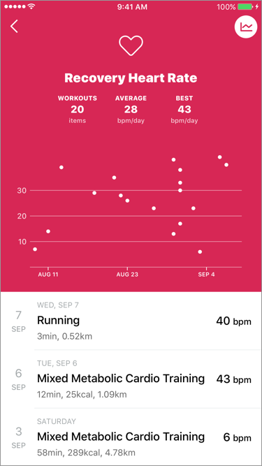
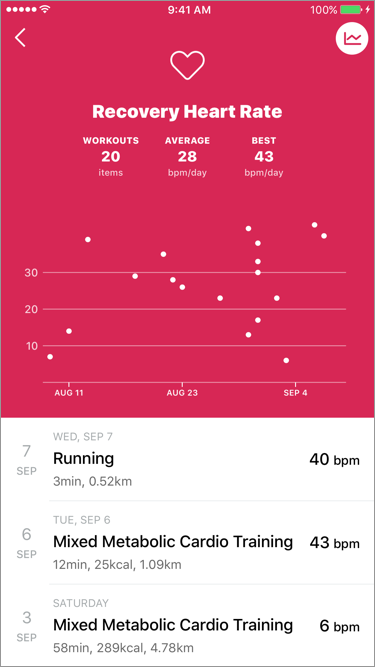

Help
Recovery Heart Rate
Recovery Heart Rate is the difference between your exercising heart rate
and your heart rate one minutes after the exercise has stopped.
It is a good indicator to gauge your fitness level!
It is better this value is larger.
Since the value changes greatly depending on how much you raise the heart rate, please increase the heart rate above a certain level before measuring.
For comparison, it would be better to measure from the same heart rate.
How to Measure
Measurement of recovery heart rate starts automatically at the timing when your workout is ended in threshold of your heart rate zone.
Please stop exercise during measurement and wait for recovery of heart rate.
!! Important Things !!
"Recovery heart rate" refers to the heart’s ability to return to normal levels after physical activity.
Therefore, it is necessary to start the measurement from the state with increased heart rate.
For this reason, we created "Threshold" as the condition to start the measurement.
If the heart rate zone is below the threshold at the end of the workout, the recovery heart rate will not be measured.
Threshold (since ver1.4.0)
"Threshold" can be changed at edit of Heart Rate Zone in Settings.
The threshold defaults is CARDIO.
To change the setting you need to purchase PRO.
The threshold defaults is CARDIO.
In ver 1.3.0 and lower versions, the threshold is fixed "CARDIO".
To change the setting you need to purchase PRO.
Confirmation
The measured recovery heart rate can be confirmed on the workout details screen.
In insight, you can extract workouts with recovery heart rate recorded.
 
